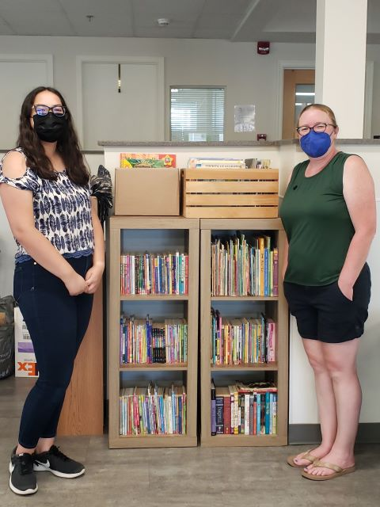

Experience
Dulles Church
- From January 2023 - present
- Serving as Lead Preschool Teacher
- Run classes for as many as 10 children during church service
- Keep children entertained and educated with lessons and games
Girl Scouts

Me and my girl scout leader with my gold award project.
- From 2011 - 2022
- Earned Gold Award: created a free library at the local homeless shelter and held sessions to read book to the children living there
- Co-lead brand new local Brownie Troop
- Volunteered at multiple places, such as the Dulles South Food Pantry, Feed The Homeless in DC, and various Girl Scout events
- Helped organize World Thinking Day, a council-wide event
Skills
- Still-expanding knowledge of biology, college education
- Knowledge of the coding languages Python, HTML, and CSS, college education
- Knowledge of the ArcGIS system, high school education
- Experience in leading and training